Masalah
Pemesanan snack secara daring membutuhkan alur yang mengorganisasi katalog produk, pesanan pelanggan, dan pengelolaan transaksi dalam satu situs web.
Situs Niaga Elektronik Makanan Ringan
Situs niaga elektronik yang dirancang untuk memudahkan pelanggan melihat dan memesan berbagai produk makanan ringan secara daring, dengan dasbor pengelola untuk mengelola produk, transaksi, dan data pelanggan.
Go-Snack memiliki area pelanggan dan pengelola. Pelanggan dapat mendaftar atau masuk, melihat katalog, mengelola keranjang, lalu melakukan pemesanan dan memperoleh nomor faktur (invoice), dan mengirim detail pesanan melalui WhatsApp untuk konfirmasi. Pengelola dapat memantau transaksi serta mengelola produk dan data pelanggan.
Pemesanan snack secara daring membutuhkan alur yang mengorganisasi katalog produk, pesanan pelanggan, dan pengelolaan transaksi dalam satu situs web.
Menyediakan alur pemesanan dari pemilihan produk sampai konfirmasi, sekaligus dasbor pengelola untuk mengelola data toko.
Go-Snack dirancang untuk menghubungkan penemuan produk, pemesanan, dan pengelolaan transaksi dalam satu alur. Kebutuhan dibagi antara customer yang berbelanja dan admin yang mengelola toko serta pesanan.
Akun untuk registrasi dan login; katalog serta detail produk dengan gambar, deskripsi, ukuran, dan harga; keranjang; checkout dengan informasi pengiriman; invoice; dan konfirmasi melalui WhatsApp.
Dasbor untuk melihat dan mengelola transaksi, menerima atau menolak pesanan, melakukan CRUD produk, serta melihat daftar customer.
Tahapan ini menggambarkan proses perancangan dan pembangunan fitur Go-Snack, tanpa mengacu pada metode pengembangan formal tertentu.
Memahami kebutuhan penjualan snack, pemesanan pelanggan, dan pengelolaan toko.
Merancang alur customer dari katalog hingga konfirmasi dan alur admin mengelola pesanan.
Menyiapkan penyimpanan data untuk produk, customer, dan transaksi sesuai kebutuhan aplikasi.
Membangun antarmuka dan fungsi katalog, keranjang, checkout, invoice, WhatsApp, serta dasbor admin.
Memeriksa fitur yang tersedia pada alur pemesanan customer dan pengelolaan pesanan admin.
Hasil implementasi mencakup perjalanan pemesanan customer dan fungsi pengelolaan toko yang dijelaskan pada repository project.
Login dan register, katalog produk, serta informasi gambar, nama, deskripsi, ukuran, dan harga.
Menambah, mengubah jumlah, dan menghapus produk dari keranjang, lalu mengisi informasi pengiriman.
Checkout menghasilkan nomor invoice; detail pesanan dapat dikirim ke WhatsApp admin untuk konfirmasi.
Admin melihat transaksi, invoice, customer, status, dan detail pesanan, lalu menerima atau menolak pesanan.
Admin melakukan CRUD produk dan melihat data customer yang terdaftar.
Tangkapan layar asli website Go-Snack yang tersedia pada project.
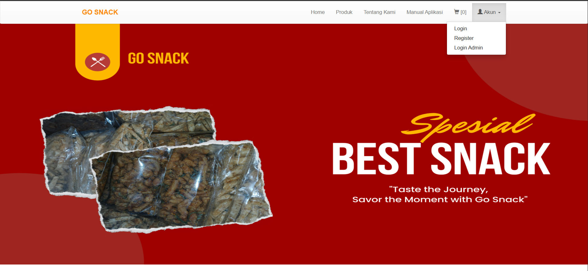
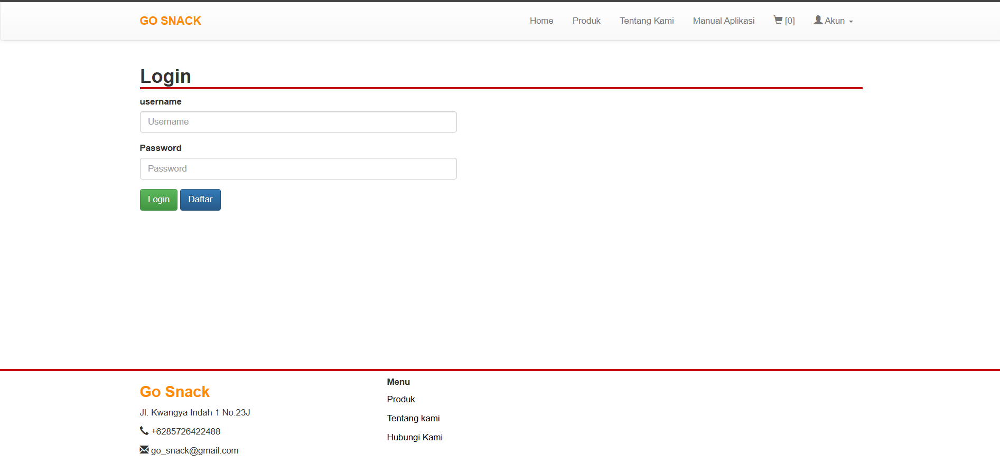
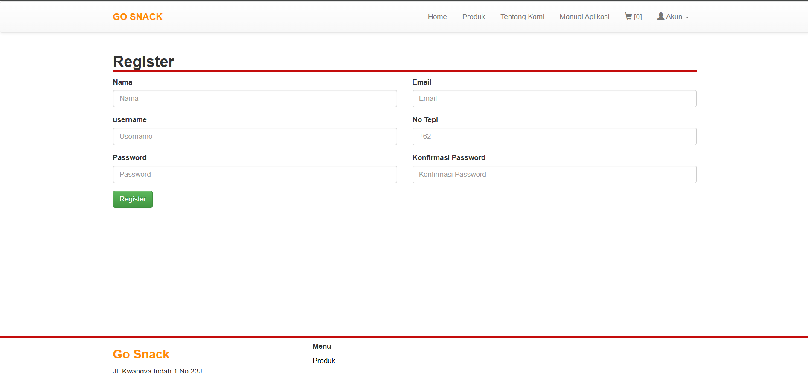
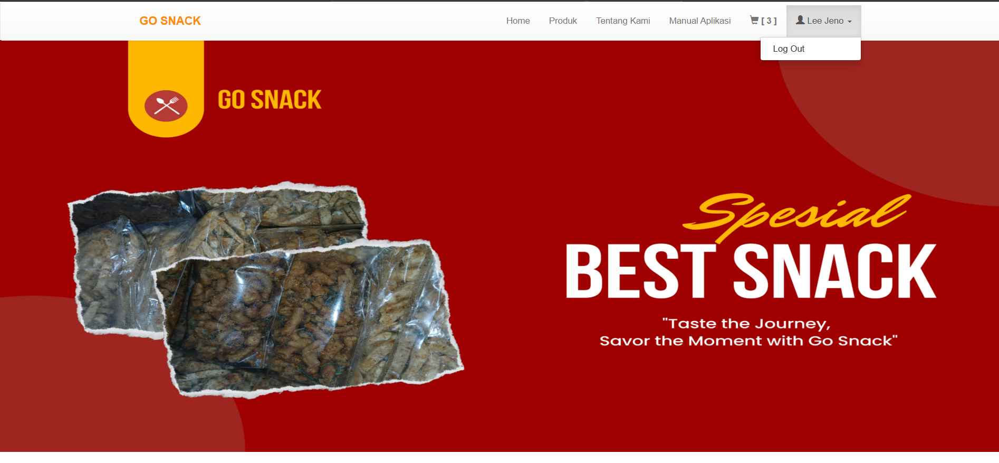
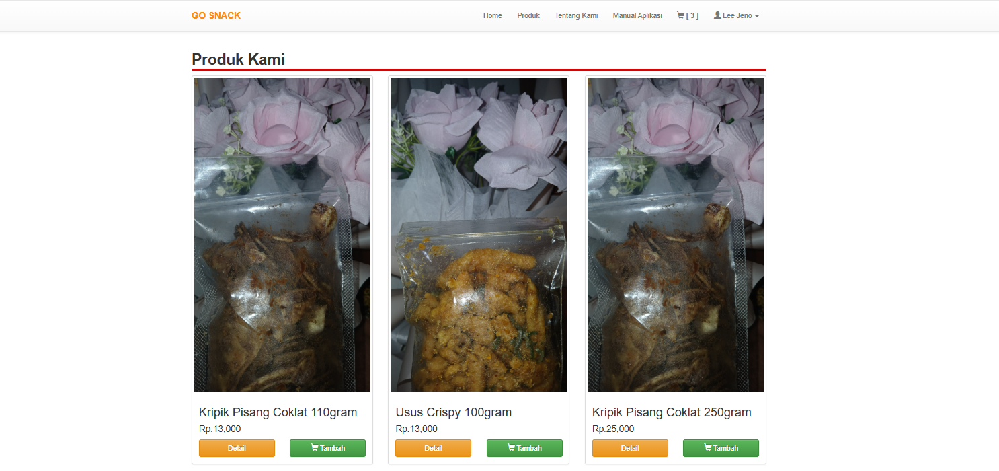
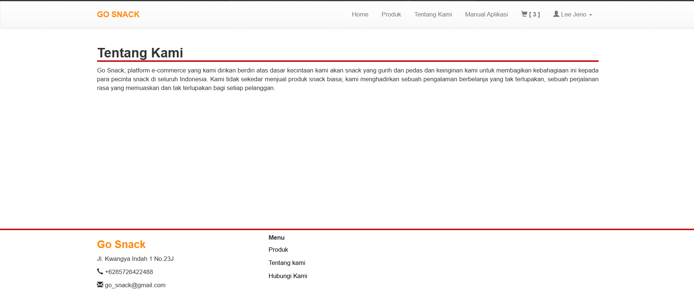
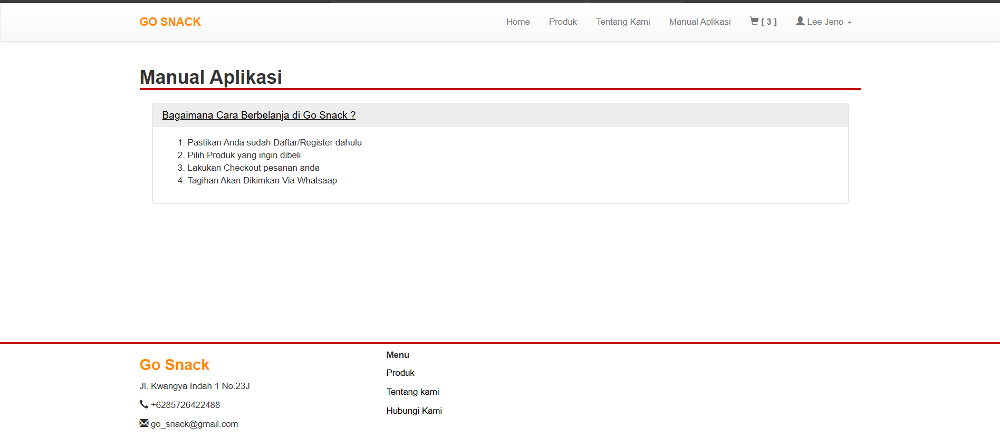
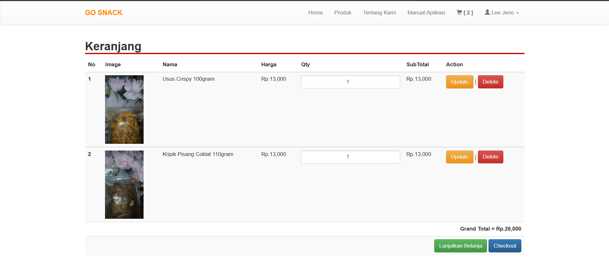
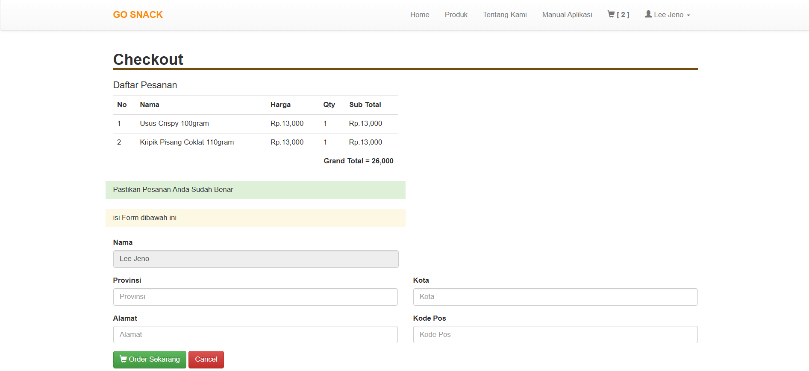
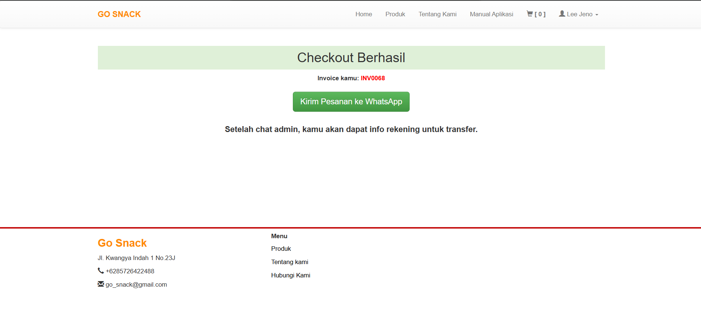
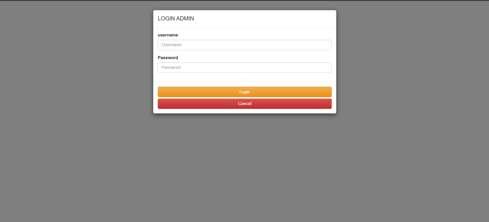
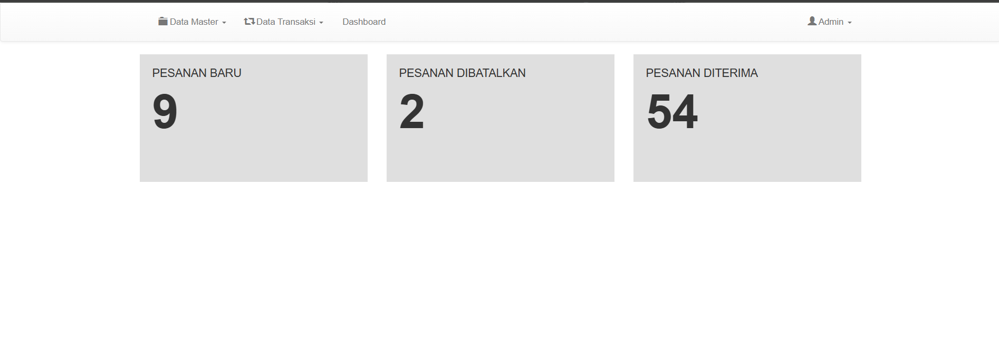
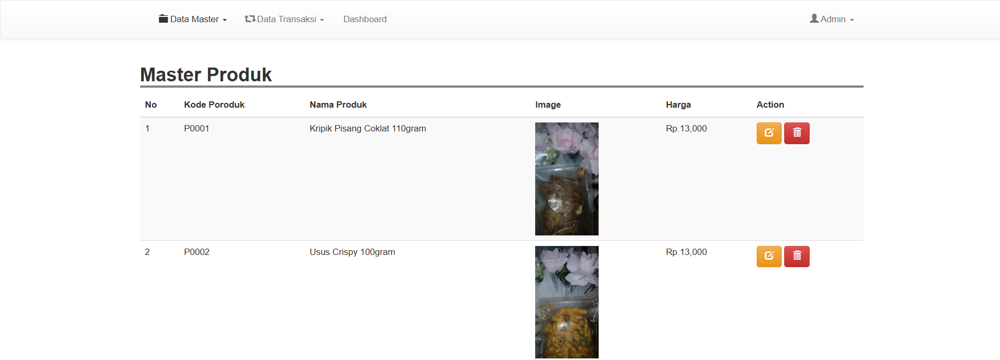
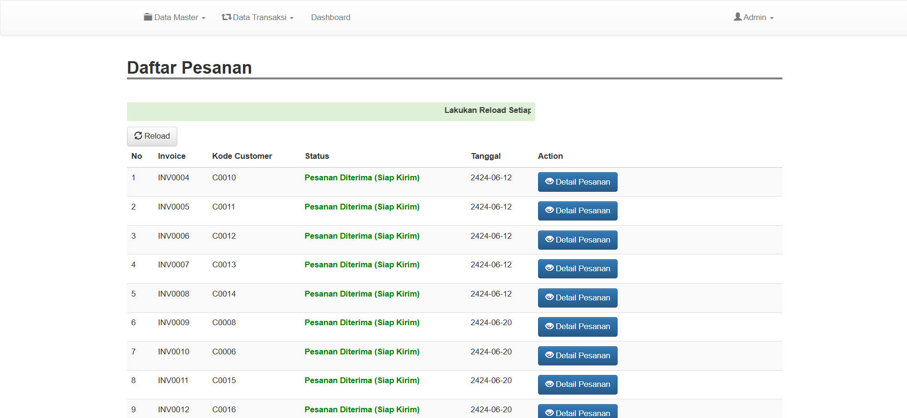
Saya merancang dan membangun Go-Snack dengan alur customer dan dasbor admin, mulai dari katalog dan keranjang hingga checkout, invoice, transaksi, serta integrasi WhatsApp.
Menganalisis kebutuhan e-commerce, merancang alur customer dan admin, serta menyiapkan struktur database.
Membangun antarmuka, katalog dan keranjang, checkout, pengelolaan transaksi dan produk, serta koneksi WhatsApp.
Menguji fitur dan mempelajari alur e-commerce, hubungan frontend, backend, dan database, pengelolaan transaksi, serta pengujian aplikasi web.